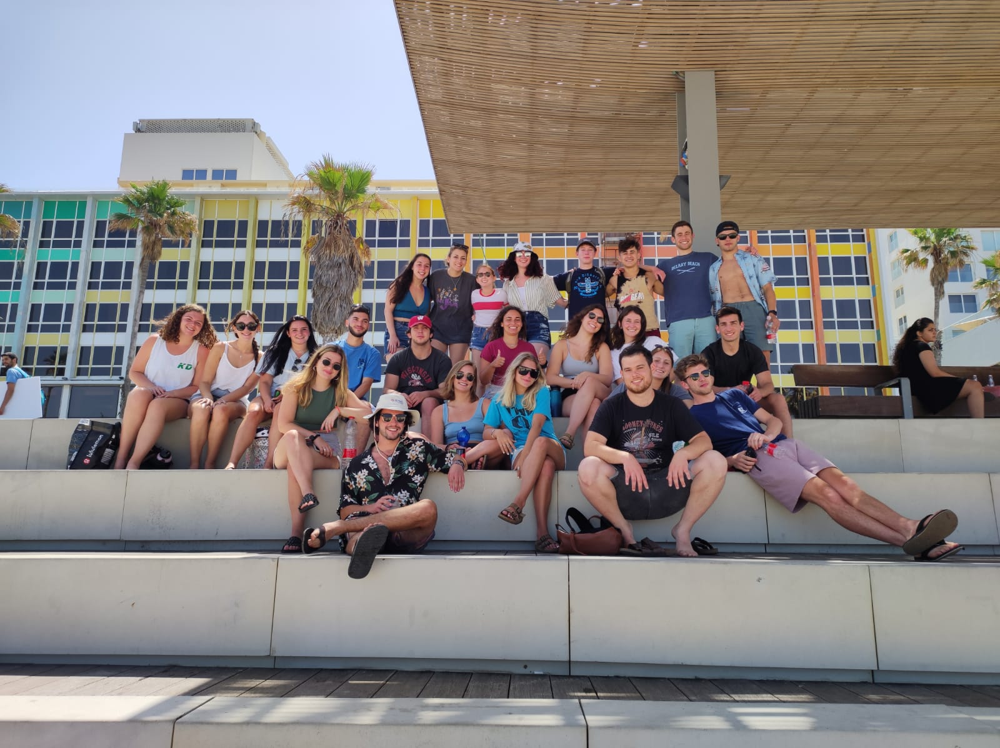

Welcome to my website full of everything you need to know to enjoy your summer in Tel Aviv! During the summer of 2021, I had the oppourtunity to work and live in Tel Aviv. This website will guide you on a tour of the best food and activities to make your own trip as memorable as possible.
Starting off here is a little bit more about how I ended up interning in Israel while many people were stuck remote. I applied for a program called Onward that finds students internships in Israel for the summer. I was on the Boston program which was designated for kids who either grew up in Boston or go to school there now.
I had the opportunity to work for this amazing small company called 24me. It was founded by a married couple who needed to fill an organizational need in their lives and decided to create two apps. Working for them and getting to design for their apps allowed me to learn so much in my time there.
Although the summer was full of work, I still had plenty of time to travel and go on adventures around the country. I met so many new people and made amazing memories on every step of this journey. I am so lucky to have had this experience, so if you are at all interested in this program I strongly recommend that you apply or reach out with any questions!